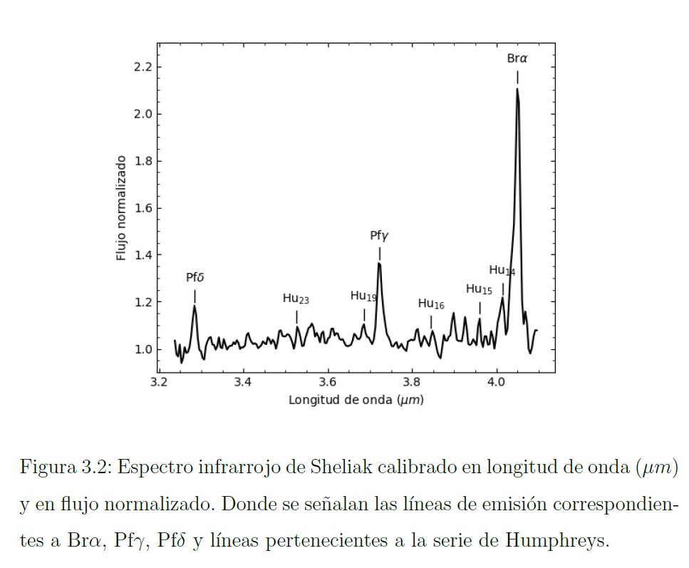
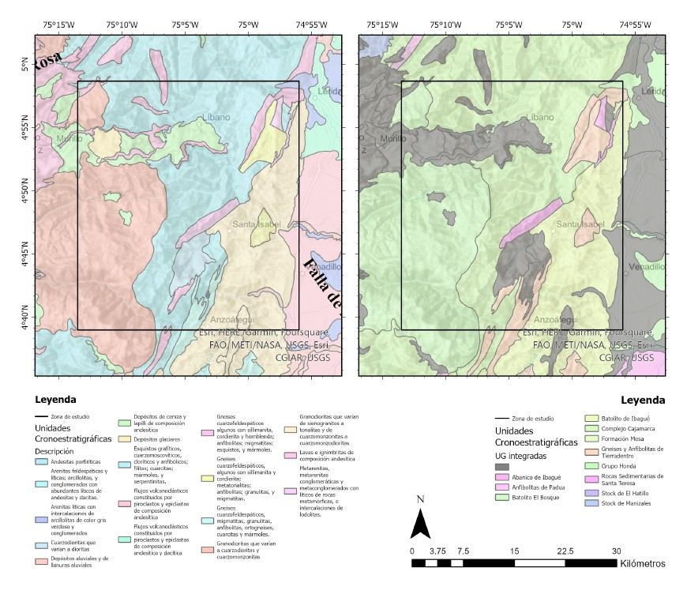

Z boson mass reconstruction with CMS Open Data
Selecting dimuon events from public CMS collision data and fitting the invariant mass peak of the Z boson.
Physicist and geoscientist building data pipelines and infrastructure for scientific and geospatial data. MSc student in GeoAI at ITC, University of Twente.
I’m a physicist and geoscientist from Colombia, now doing an MSc in Geo-Information Science and Earth Observation (GeoAI) at ITC, University of Twente.
Before that I worked as an Enterprise Specialist Support Analyst at Esri Colombia, spending my days inside other people’s systems: diagnosing servers, databases and data pipelines for clients around the world. Earlier, I collected, mapped and visualised data for projects on violence monitoring, energy transition and national heritage.
What I enjoy most is the full path from raw data to something people can actually use, and explaining it to people who aren’t technical. Outside work, that has meant mentoring students as a teaching assistant and doing community service with Active 20-30.

Analysed the L-band (3–4 μm) spectrum of Sheliak (β Lyrae) obtained with the CID-InSb spectrograph at San Pedro Mártir Observatory, Mexico. Measured flux ratios and line profiles of the Humphreys, Pfund and Brackett series.
Outcome: Sheliak's spectrum does not fully match standard Be-star or binary-system models, pointing to a case that needs further study.

Built a semi-automatic lineament density workflow with the ArcGIS API for Python and DEM analysis for the Santa Isabel–Líbano district, in Colombia's Central Cordillera, and compared it with known orogenic gold occurrences.
Outcome: Spatial correlation between high lineament density and gold occurrences, supporting a low-cost screening method for underexplored areas worth it to deep more into the analysis.
Selecting dimuon events from public CMS collision data and fitting the invariant mass peak of the Z boson.
Relación entre barcos no operativos y el movimiento de las stocks en el mercado.
Sentinel-2 vegetation indices and DEM analysis to flag hydrogen seepage; three exploration targets proposed.
Collected and georeferenced structured and unstructured data from Defensoría del Pueblo, OCHA, DANE and INDEPAZ, and built dashboards to centralise it. Managed the project's ArcGIS Hub site, maps and applications throughout 2024, and contributed to the analytical reports.
Outcome: actionable reports supporting violence-prevention and human-rights policy.
Migrated 200+ map services between ArcGIS Enterprise versions on a new cloud deployment, with an automated Python publication pipeline and inventory reconciliation.
Thematic maps for the 2nd edition of Julio Carrizosa Umaña's book, plus an interactive viewer so readers can explore them online.
Augmented-reality applications built with ArcGIS Maps SDK for Unity, presented at the Esri Colombia Users Conference.
Cloud migration of 200+ services with an automated Python pipeline.
600+ cases for international clients; ArcGIS Enterprise administration.
Delfos, Colombia Compleja.
Physics I & II, Modern Physics, Remote Sensing, GNSS, Seismology.
ArcGIS Pro Associate (2025)
Spanish (native) · English (C1, IELTS 7.5)
Open to research internships and collaborations in scientific computing, earth observation and data infrastructure.